CODING AGENTS AS PIXEL WORLD MODELS
traex/GPT-5.6-Sol · 0191
点击播放 · 原生 RGB 像素
逐轮保存的候选
回放视频、检查图与代码变化。
每份候选均可单独播放。实际图片检查记录在下方工具轨迹中。
候选 01播放与检查图
点击播放 · 原生 RGB 像素
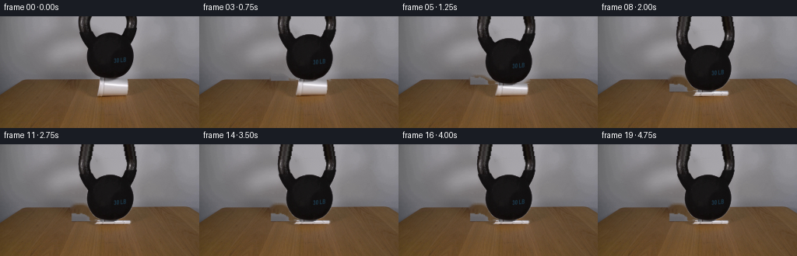
展开代码变化
--- 上一保存版本
+++ 本次保存版本
@@ -0,0 +1,197 @@
+"""Generate the locked-camera kettlebell / foam-cup demonstration.
+
+The source photograph provides all scene appearance. The animation uses a small
+analytic, damped compression: the cup is squashed against the table while the
+kettlebell settles by the same distance. No external assets are used.
+"""
+from pathlib import Path
+import cv2
+import numpy as np
+from artifact_io import save
+
+CASE_DIR = Path(__file__).resolve().parent
+H, W = 144, 256
+
+
+def soften(mask, sigma=0.65):
+ return cv2.GaussianBlur(mask.astype(np.float32), (0, 0), sigma).clip(0, 1)
+
+
+def over(dst, rgb, alpha, x=0, y=0):
+ """Alpha-composite an RGB patch, safely clipped to the frame."""
+ ph, pw = alpha.shape
+ x0, y0 = max(0, x), max(0, y)
+ x1, y1 = min(W, x + pw), min(H, y + ph)
+ if x0 >= x1 or y0 >= y1:
+ return
+ sx0, sy0 = x0 - x, y0 - y
+ sx1, sy1 = sx0 + (x1 - x0), sy0 + (y1 - y0)
+ a = alpha[sy0:sy1, sx0:sx1, None]
+ dst[y0:y1, x0:x1] = dst[y0:y1, x0:x1] * (1-a) + rgb[sy0:sy1, sx0:sx1] * a
+
+
+def make_assets(source):
+ gray = cv2.cvtColor(source, cv2.COLOR_RGB2GRAY)
+
+ # Kettlebell: choose the dark connected object in the upper center. The
+ # threshold includes its real highlights and blue weight lettering.
+ eligible = np.zeros((H, W), np.uint8)
+ eligible[:82, 92:187] = 1
+ raw = ((gray < 112) & (eligible != 0)).astype(np.uint8)
+ raw = cv2.morphologyEx(raw, cv2.MORPH_CLOSE, np.ones((3,3),np.uint8))
+ n, labels, stats, _ = cv2.connectedComponentsWithStats(raw)
+ idx = 1 + np.argmax(stats[1:, cv2.CC_STAT_AREA])
+ bell_hard = (labels == idx).astype(np.uint8)
+ # Remove isolated wall-shadow tendrils while retaining the ring and body.
+ bell_hard = cv2.morphologyEx(bell_hard, cv2.MORPH_CLOSE,
+ np.ones((3,3),np.uint8))
+ bell_a = soften(bell_hard, .55)
+
+ # Build an object layer with an extension above the photograph. As the
+ # weight descends, this avoids a visibly straight crop at the top edge.
+ top = 24
+ bh = H + top
+ bell_rgb = np.zeros((bh, W, 3), np.float32)
+ bell_alpha = np.zeros((bh, W), np.float32)
+ bell_rgb[top:] = source.astype(np.float32)
+ bell_alpha[top:] = bell_a
+ row_rgb = source[0].astype(np.float32)
+ row_a = bell_a[0]
+ # Continue the two sides of the handle upward, gently converging toward
+ # the unseen top of its loop.
+ for k in range(1, top+1):
+ yy = top-k
+ shift = int(round(k * .16))
+ left = np.zeros(W, np.float32); right = np.zeros(W, np.float32)
+ left_rgb = np.zeros((W,3), np.float32)
+ right_rgb = np.zeros((W,3), np.float32)
+ # Split at the empty center of the loop.
+ for xx in range(W):
+ if row_a[xx] <= 0: continue
+ nx = xx + shift if xx < 138 else xx - shift
+ if 0 <= nx < W:
+ bell_alpha[yy,nx] = max(bell_alpha[yy,nx], row_a[xx])
+ bell_rgb[yy,nx] = row_rgb[xx]
+ # A tiny vertical brightness drift prevents a perfectly repeated row.
+ bell_rgb[yy] *= (1.0 - .002*k)
+ bell_alpha = cv2.GaussianBlur(bell_alpha, (0,0), .35).clip(0,1)
+
+ # Cup silhouette measured from the original. It is a horizontal foam cup
+ # lying on the tabletop, with its rim at left and closed end at right.
+ cup_poly = np.array([[125,79],[165,80],[167,84],[166,97],
+ [162,103],[124,104],[123,99]], np.int32)
+ cup_hard = np.zeros((H,W), np.uint8)
+ cv2.fillPoly(cup_hard, [cup_poly], 1)
+ # The bell overlaps a few source pixels at the top; reconstruct those from
+ # neighboring white cup material before transforming it.
+ cup_img = source.astype(np.float32).copy()
+ for y in range(79,84):
+ for x in range(123,168):
+ if cup_hard[y,x] and gray[y,x] < 80:
+ cup_img[y,x] = source[min(88, y+7), np.clip(x,126,164)]
+ x0,y0,x1,y1 = 121,78,169,105
+ cup_rgb = cup_img[y0:y1,x0:x1]
+ cup_a = soften(cup_hard[y0:y1,x0:x1], .55)
+
+ # Produce a clean plate for portions exposed by the descending objects.
+ removal = cv2.dilate(((bell_hard | cup_hard)*255),
+ np.ones((5,5),np.uint8), iterations=1)
+ plate = cv2.inpaint(cv2.cvtColor(source,cv2.COLOR_RGB2BGR), removal, 5,
+ cv2.INPAINT_TELEA)
+ plate = cv2.cvtColor(plate,cv2.COLOR_BGR2RGB).astype(np.float32)
+ # Restore all original pixels away from the narrow removal area.
+ return plate, bell_rgb, bell_alpha, cup_rgb, cup_a, (x0,y0,x1,y1)
+
+
+def add_shadow(frame, dy):
+ """Soft contact/cast shadow, tightening as the bell settles."""
+ shadow = np.zeros((H,W), np.float32)
+ # The shadow falls slightly left/back under the very low bell and cup.
+ cy = 94.0 + .34*dy
+ ax = 23.0 + .18*dy
+ ay = 4.8 + .09*dy
+ yy,xx = np.mgrid[0:H,0:W]
+ oval = np.exp(-(((xx-140.0)/ax)**2 + ((yy-cy)/ay)**2)*1.8)
+ shadow = cv2.GaussianBlur(oval.astype(np.float32),(0,0),2.0)
+ strength = .10 + .004*dy
+ frame *= (1.0 - strength*shadow[...,None])
+
+
+def transformed_cup(rgb, alpha, dy, frame_index):
+ """Compress about the lower edge, with subtle lateral buckling."""
+ h,w = alpha.shape
+ sy = max(.225, (24.0-dy)/24.0)
+ # Foam bulges sideways as the cylinder wall buckles.
+ extra = int(round(10.0 * (1.0-sy)))
+ nw = w + extra
+ nh = max(5, int(round(h*sy)))
+ rr = cv2.resize(rgb, (nw,nh), interpolation=cv2.INTER_LINEAR)
+ aa = cv2.resize(alpha, (nw,nh), interpolation=cv2.INTER_AREA)
+
+ # Add restrained compression creases using the source's own gray palette.
+ if dy >= 6:
+ crease = np.zeros((nh,nw),np.float32)
+ amount = min(1.0,(dy-5)/12.0)
+ for frac, slope in ((.27,.10),(.55,-.08),(.76,.06)):
+ x = int(frac*nw)
+ pts=[]
+ for y in range(nh):
+ xx=int(x + slope*(y-nh/2) + 1.2*np.sin(y*1.7+frame_index*.18))
+ pts.append((xx,y))
+ cv2.polylines(crease,[np.array(pts,np.int32)],False,.55*amount,1,cv2.LINE_AA)
+ crease = cv2.GaussianBlur(crease,(0,0),.45)
+ rr *= (1.0 - .22*crease[...,None]*aa[...,None])
+ # A narrow highlight on folded foam beside each darker crease.
+ hi = np.roll(crease,2,axis=1)
+ rr += 13.0*hi[...,None]*aa[...,None]
+ return rr.clip(0,255), aa.clip(0,1), nw, nh
+
+
+def generate():
+ source_bgr = cv2.imread(str(CASE_DIR/'first_frame.png'), cv2.IMREAD_COLOR)
+ if source_bgr is None:
+ raise FileNotFoundError('first_frame.png')
+ source = cv2.cvtColor(source_bgr, cv2.COLOR_BGR2RGB)
+ assert source.shape == (H,W,3)
+ plate,bell_rgb,bell_a,cup_rgb,cup_a,cup_box = make_assets(source)
+
+ # 30 lb load crushes the foam over about two seconds, then makes one small
+ # physically damped rebound and remains at rest.
+ drops = [0,0,1,2,4,7,10,13,16,18,17,18,18,17.6,18,18,18,18,18,18]
+ frames=[]
+ for i,dyf in enumerate(drops):
+ if i == 0:
+ frames.append(source.copy())
+ continue
+ dy = float(dyf)
+ frame = plate.copy()
+ add_shadow(frame,dy)
+
+ # Cup lower edge stays against the table at source y=104.
+ cr,ca,cw,ch = transformed_cup(cup_rgb,cup_a,dy,i)
+ cup_center = (121+169)/2.0
+ cx = int(round(cup_center-cw/2.0))
+ cy = 104-ch
+ over(frame,cr,ca,cx,cy)
+
+ # Place the photographically extracted weight after the cup so it is
+ # correctly in front at the contact line. Integer vertical movement
+ # keeps source detail sharp at this tiny resolution.
+ idy = int(round(dy))
+ over(frame,bell_rgb,bell_a,0,-24+idy)
+
+ # Very mild fixed-camera sensor grain prevents transformed/inpainted
+ # areas from looking unnaturally sterile. It is deterministic.
+ rng=np.random.default_rng(1907+i)
+ noise=rng.normal(0,.22,frame.shape[:2])[...,None]
+ frame += noise
+ frames.append(np.clip(np.rint(frame),0,255).astype(np.uint8))
+
+ frames=np.stack(frames,axis=0)
+ # Contractual pixel identity for frame zero.
+ frames[0]=source
+ save(frames,CASE_DIR)
+
+
+if __name__ == '__main__':
+ generate()
候选 02播放与检查图
点击播放 · 原生 RGB 像素
展开代码变化
--- 上一保存版本
+++ 本次保存版本
@@ -96,6 +96,10 @@
# Produce a clean plate for portions exposed by the descending objects.
removal = cv2.dilate(((bell_hard | cup_hard)*255),
np.ones((5,5),np.uint8), iterations=1)
+ # Do not erase the tabletop merely because a dark wood patch happened to
+ # join the thresholded object at its bottom edge. The true bell ends near
+ # y=80 and the cup occupies the small region below it.
+ removal[82:] = cv2.dilate(cup_hard*255, np.ones((5,5),np.uint8))[82:]
plate = cv2.inpaint(cv2.cvtColor(source,cv2.COLOR_RGB2BGR), removal, 5,
cv2.INPAINT_TELEA)
plate = cv2.cvtColor(plate,cv2.COLOR_BGR2RGB).astype(np.float32)
候选 03播放与检查图
候选 04播放与检查图
点击播放 · 原生 RGB 像素
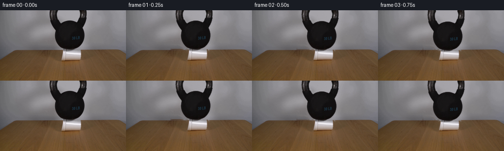
展开代码变化
--- 上一保存版本
+++ 本次保存版本
@@ -45,6 +45,11 @@
# Remove isolated wall-shadow tendrils while retaining the ring and body.
bell_hard = cv2.morphologyEx(bell_hard, cv2.MORPH_CLOSE,
np.ones((3,3),np.uint8))
+ # The body just kisses the dark table boundary in the low-resolution
+ # photograph. Constrain the final few rows so that boundary cannot become
+ # part of the moving foreground layer.
+ bell_hard[79:, :122] = 0
+ bell_hard[79:, 162:] = 0
bell_a = soften(bell_hard, .55)
# Build an object layer with an extension above the photograph. As the
候选 05播放与检查图
点击播放 · 原生 RGB 像素
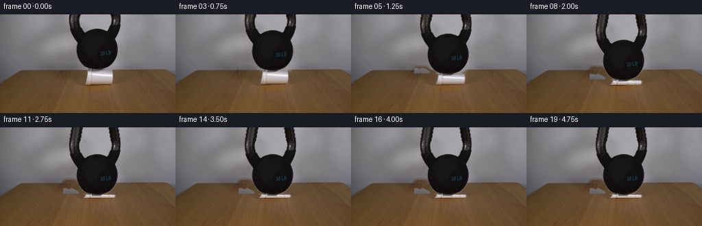
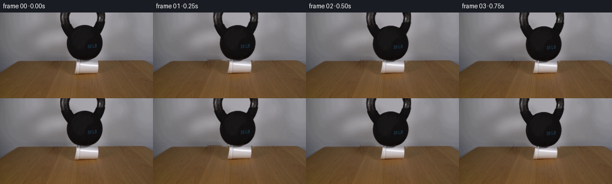
展开代码变化
--- 上一保存版本
+++ 本次保存版本
@@ -48,8 +48,8 @@
# The body just kisses the dark table boundary in the low-resolution
# photograph. Constrain the final few rows so that boundary cannot become
# part of the moving foreground layer.
- bell_hard[79:, :122] = 0
- bell_hard[79:, 162:] = 0
+ bell_hard[79:, :134] = 0
+ bell_hard[79:, 149:] = 0
bell_a = soften(bell_hard, .55)
# Build an object layer with an extension above the photograph. As the
可观测工具轨迹
实际执行的命令与返回图片。
命令 1exit 0
/bin/bash -lc 'cat GENERATION_RULES.md'
命令 2exit 0
/bin/bash -lc "cat prompt.txt && printf '\\n---FILES---\\n' && find . -maxdepth 2 -type f -printf '%p %s bytes\\n' | sort"
命令 3exit 0
/bin/bash -lc "which ffmpeg || true; which python3 || true; python3 - <<'PY' for m in ['cv2','PIL','numpy','imageio','scipy']: try: x=__import__(m); print(m,'OK',getattr(x,'__version__','')) except Exception as e: print(m,'NO',e) PY"
命令 4exit 0
/bin/bash -lc "sed -n '1,240p' artifact_io.py"
命令 5exit 0
/bin/bash -lc "python3 - <<'PY'
from PIL import Image
import numpy as np
im=np.array(Image.open('first_frame.png').convert('RGB'))
# Report grayscale stats and dark span by row in ROI
G=im.mean(2)
for y in range(0,106,5):
xs=np.where(G[y]<75)[0]
xs=xs[(xs>80)&(xs<190)]
print(y, (xs.min(),xs.max(),len(xs)) if len(xs) else None)
PY"命令 6exit 0
/bin/bash -lc "python3 - <<'PY'
from PIL import Image
im=Image.open('first_frame.png')
im.crop((95,65,190,115)).resize((760,400)).save('.tmp/crop.png')
PY"命令 7exit 0
/bin/bash -lc "cat > .tmp/test_masks.py <<'PY'
import cv2, numpy as np
from PIL import Image
im=cv2.imread('first_frame.png')
g=cv2.cvtColor(im,cv2.COLOR_BGR2GRAY)
# kettle
roi=np.zeros(g.shape,np.uint8); roi[:84,94:184]=1
raw=((g<88)&(roi>0)).astype(np.uint8)*255
raw=cv2.morphologyEx(raw,cv2.MORPH_CLOSE,np.ones((3,3),np.uint8),iterations=1)
# components connected to body center; largest
n,l,st,cent=cv2.connectedComponentsWithStats(raw)
i=1+np.argmax(st[1:,cv2.CC_STAT_AREA]); km=(l==i).astype(np.uint8)*255
# union body threshold can be connected
km=cv2.morphologyEx(km,cv2.MORPH_CLOSE,np.ones((3,3),np.uint8),iterations=1)
# cup manual bright / polygon
cm=np.zeros_like(g); cv2.fillPoly(cm,[np.array([[125,79],[166,80],[166,101],[161,104],[124,104],[123,99]])],255)
# Remove kettle overlap from cup irrelevant
mask=cv2.dilate(cv2.max(km,cm),np.ones((7,7),np.uint8))
bg=cv2.inpaint(im,mask,5,cv2.INPAINT_TELEA)
cv2.imwrite('.tmp/km.png',km); cv2.imwrite('.tmp/cm.png',cm); cv2.imwrite('.tmp/bg.png',bg)
vis=im.copy(); vis[km>0]=(0,0,255); vis[cm>0]=(0,255,0); cv2.imwrite('.tmp/vis.png',vis)
PY
python3 .tmp/test_masks.py"命令 8exit 0
/bin/bash -lc "cat > generate.py <<'PY'
\"\"\"Generate the locked-camera kettlebell / foam-cup demonstration.
The source photograph provides all scene appearance. The animation uses a small
analytic, damped compression: the cup is squashed against the table while the
kettlebell settles by the same distance. No external assets are used.
\"\"\"
from pathlib import Path
import cv2
import numpy as np
from artifact_io import save
CASE_DIR = Path(__file__).resolve().parent
H, W = 144, 256
def soften(mask, sigma=0.65):
return cv2.GaussianBlur(mask.astype(np.float32), (0, 0), sigma).clip(0, 1)
def over(dst, rgb, alpha, x=0, y=0):
\"\"\"Alpha-composite an RGB patch, safely clipped to the frame.\"\"\"
ph, pw = alpha.shape
x0, y0 = max(0, x), max(0, y)
x1, y1 = min(W, x + pw), min(H, y + ph)
if x0 >= x1 or y0 >= y1:
return
sx0, sy0 = x0 - x, y0 - y
sx1, sy1 = sx0 + (x1 - x0), sy0 + (y1 - y0)
a = alpha[sy0:sy1, sx0:sx1, None]
dst[y0:y1, x0:x1] = dst[y0:y1, x0:x1] * (1-a) + rgb[sy0:sy1, sx0:sx1] * a
def make_assets(source):
gray = cv2.cvtColor(source, cv2.COLOR_RGB2GRAY)
# Kettlebell: choose the dark connected object in the upper center. The
# threshold includes its real highlights and blue weight lettering.
eligible = np.zeros((H, W), np.uint8)
eligible[:82, 92:187] = 1
raw = ((gray < 112) & (eligible "'!= 0)).astype(np.uint8)
raw = cv2.morphologyEx(raw, cv2.MORPH_CLOSE, np.ones((3,3),np.uint8))
n, labels, stats, _ = cv2.connectedComponentsWithStats(raw)
idx = 1 + np.argmax(stats[1:, cv2.CC_STAT_AREA])
bell_hard = (labels == idx).astype(np.uint8)
# Remove isolated wall-shadow tendrils while retaining the ring and body.
bell_hard = cv2.morphologyEx(bell_hard, cv2.MORPH_CLOSE,
np.ones((3,3),np.uint8))
bell_a = soften(bell_hard, .55)
# Build an object layer with an extension above the photograph. As the
# weight descends, this avoids a visibly straight crop at the top edge.
top = 24
bh = H + top
bell_rgb = np.zeros((bh, W, 3), np.float32)
bell_alpha = np.zeros((bh, W), np.float32)
bell_rgb[top:] = source.astype(np.float32)
bell_alpha[top:] = bell_a
row_rgb = source[0].astype(np.float32)
row_a = bell_a[0]
# Continue the two sides of the handle upward, gently converging toward
# the unseen top of its loop.
for k in range(1, top+1):
yy = top-k
shift = int(round(k * .16))
left = np.zeros(W, np.float32); right = np.zeros(W, np.float32)
left_rgb = np.zeros((W,3), np.float32)
right_rgb = np.zeros((W,3), np.float32)
# Split at the empty center of the loop.
for xx in range(W):
if row_a[xx] <= 0: continue
nx = xx + shift if xx < 138 else xx - shift
if 0 <= nx < W:
bell_alpha[yy,nx] = max(bell_alpha[yy,nx], row_a[xx])
bell_rgb[yy,nx] = row_rgb[xx]
# A tiny vertical brightness drift prevents a perfectly repeated row.
bell_rgb[yy] *= (1.0 - .002*k)
bell_alpha = cv2.GaussianBlur(bell_alpha, (0,0), .35).clip(0,1)
# Cup silhouette measured from the original. It is a horizontal foam cup
# lying on the tabletop, with its rim at left and closed end at right.
cup_poly = np.array([[125,79],[165,80],[167,84],[166,97],
[162,103],[124,104],[123,99]], np.int32)
cup_hard = np.zeros((H,W), np.uint8)
cv2.fillPoly(cup_hard, [cup_poly], 1)
# The bell overlaps a few source pixels at the top; reconstruct those from
# neighboring white cup material before transforming it.
cup_img = source.astype(np.float32).copy()
for y in range(79,84):
for x in range(123,168):
if cup_hard[y,x] and gray[y,x] < 80:
cup_img[y,x] = source[min(88, y+7), np.clip(x,126,164)]
x0,y0,x1,y1 = 121,78,169,105
cup_rgb = cup_img[y0:y1,x0:x1]
cup_a = soften(cup_hard[y0:y1,x0:x1], .55)
# Produce a clean plate for portions exposed by the descending objects.
removal = cv2.dilate(((bell_hard | cup_hard)*255),
np.ones((5,5),np.uint8), iterations=1)
plate = cv2.inpaint(cv2.cvtColor(source,cv2.COLOR_RGB2BGR), removal, 5,
cv2.INPAINT_TELEA)
plate = cv2.cvtColor(plate,cv2.COLOR_BGR2RGB).astype(np.float32)
# Restore all original pixels away from the narrow removal area.
return plate, bell_rgb, bell_alpha, cup_rgb, cup_a, (x0,y0,x1,y1)
def add_shadow(frame, dy):
"""Soft contact/cast shadow, tightening as the bell settles."""
shadow = np.zeros((H,W), np.float32)
# The shadow falls slightly left/back under the very low bell and cup.
cy = 94.0 + .34*dy
ax = 23.0 + .18*dy
ay = 4.8 + .09*dy
yy,xx = np.mgrid[0:H,0:W]
oval = np.exp(-(((xx-140.0)/ax)**2 + ((yy-cy)/ay)**2)*1.8)
shadow = cv2.GaussianBlur(oval.astype(np.float32),(0,0),2.0)
strength = .10 + .004*dy
frame *= (1.0 - strength*shadow[...,None])
def transformed_cup(rgb, alpha, dy, frame_index):
"""Compress about the lower edge, with subtle lateral buckling."""
h,w = alpha.shape
sy = max(.225, (24.0-dy)/24.0)
# Foam bulges sideways as the cylinder wall buckles.
extra = int(round(10.0 * (1.0-sy)))
nw = w + extra
nh = max(5, int(round(h*sy)))
rr = cv2.resize(rgb, (nw,nh), interpolation=cv2.INTER_LINEAR)
aa = cv2.resize(alpha, (nw,nh), interpolation=cv2.INTER_AREA)
# Add restrained compression creases using the source'"'s own gray palette.
if dy >= 6:
crease = np.zeros((nh,nw),np.float32)
amount = min(1.0,(dy-5)/12.0)
for frac, slope in ((.27,.10),(.55,-.08),(.76,.06)):
x = int(frac*nw)
pts=[]
for y in range(nh):
xx=int(x + slope*(y-nh/2) + 1.2*np.sin(y*1.7+frame_index*.18))
pts.append((xx,y))
cv2.polylines(crease,[np.array(pts,np.int32)],False,.55*amount,1,cv2.LINE_AA)
crease = cv2.GaussianBlur(crease,(0,0),.45)
rr *= (1.0 - .22*crease[...,None]*aa[...,None])
# A narrow highlight on folded foam beside each darker crease.
hi = np.roll(crease,2,axis=1)
rr += 13.0*hi[...,None]*aa[...,None]
return rr.clip(0,255), aa.clip(0,1), nw, nh
def generate():
source_bgr = cv2.imread(str(CASE_DIR/'first_frame.png'), cv2.IMREAD_COLOR)
if source_bgr is None:
raise FileNotFoundError('first_frame.png')
source = cv2.cvtColor(source_bgr, cv2.COLOR_BGR2RGB)
assert source.shape == (H,W,3)
plate,bell_rgb,bell_a,cup_rgb,cup_a,cup_box = make_assets(source)
# 30 lb load crushes the foam over about two seconds, then makes one small
# physically damped rebound and remains at rest.
drops = [0,0,1,2,4,7,10,13,16,18,17,18,18,17.6,18,18,18,18,18,18]
frames=[]
for i,dyf in enumerate(drops):
if i == 0:
frames.append(source.copy())
continue
dy = float(dyf)
frame = plate.copy()
add_shadow(frame,dy)
# Cup lower edge stays against the table at source y=104.
cr,ca,cw,ch = transformed_cup(cup_rgb,cup_a,dy,i)
cup_center = (121+169)/2.0
cx = int(round(cup_center-cw/2.0))
cy = 104-ch
over(frame,cr,ca,cx,cy)
# Place the photographically extracted weight after the cup so it is
# correctly in front at the contact line. Integer vertical movement
# keeps source detail sharp at this tiny resolution.
idy = int(round(dy))
over(frame,bell_rgb,bell_a,0,-24+idy)
# Very mild fixed-camera sensor grain prevents transformed/inpainted
# areas from looking unnaturally sterile. It is deterministic.
rng=np.random.default_rng(1907+i)
noise=rng.normal(0,.22,frame.shape[:2])[...,None]
frame += noise
frames.append(np.clip(np.rint(frame),0,255).astype(np.uint8))
frames=np.stack(frames,axis=0)
# Contractual pixel identity for frame zero.
frames[0]=source
save(frames,CASE_DIR)
if __name__ == '__main__':
generate()
PY
python3 generate.py
python3 - <<'PY'
from PIL import Image
import numpy as np
f=np.array(Image.open('frames/00.png').convert('RGB')); s=np.array(Image.open('first_frame.png').convert('RGB'))
print('shape',f.shape,'frame0 exact',np.array_equal(f,s),'maxdiff',np.abs(f.astype(int)-s).max())
print('outputs',len(list(__import__('pathlib').Path('frames').glob('*.png'))))
PY"命令 9exit 0
/bin/bash -lc "python3 - <<'PY'
from PIL import Image
for i in [5,8,11]: Image.open(f'frames/{i:02}.png').crop((75,70,190,115)).resize((920,360)).save(f'.tmp/c{i}.png')
PY"命令 10exit 0
/bin/bash -lc "python3 - <<'PY'
import cv2
from PIL import Image
# import assets and recreate display mask
import generate, numpy as np
src=cv2.cvtColor(cv2.imread('first_frame.png'),cv2.COLOR_BGR2RGB)
gray=cv2.cvtColor(src,cv2.COLOR_RGB2GRAY); eligible=np.zeros((144,256),np.uint8); eligible[:82,92:187]=1
raw=((gray<112)&(eligible"'!=0)).astype(np.uint8);raw=cv2.morphologyEx(raw,cv2.MORPH_CLOSE,np.ones((3,3),np.uint8));n,l,s,_=cv2.connectedComponentsWithStats(raw);idx=1+np.argmax(s[1:,4]); m=(l==idx).astype(np.uint8)
print('"'bounds',cv2.boundingRect(m), 'area',m.sum())
Image.fromarray(m*255).save('.tmp/maskbell.png')
PY"命令 11exit 0
/bin/bash -lc "python3 generate.py && python3 - <<'PY'
from PIL import Image
for i in [5,11]: Image.open(f'frames/{i:02}.png').crop((75,70,190,115)).resize((920,360)).save(f'.tmp/d{i}.png')
PY"命令 12exit 0
/bin/bash -lc "python3 generate.py && python3 - <<'PY'
from PIL import Image
Image.open('frames/11.png').crop((75,70,190,115)).resize((920,360)).save('.tmp/e11.png')
PY"命令 13exit 0
/bin/bash -lc "python3 generate.py && python3 - <<'PY'
from PIL import Image
import numpy as np
from pathlib import Path
src=np.array(Image.open('first_frame.png').convert('RGB')); f0=np.array(Image.open('frames/00.png').convert('RGB'))
a=np.load('pixels.npz')['pixels']
print('frame0_exact:',np.array_equal(src,f0))
print('tensor:',a.shape,a.dtype,'range',a.min(),a.max())
print('frames:',len(list(Path('frames').glob('*.png'))))
print('artifacts:',[(x.name,x.stat().st_size) for x in [Path('pixels.npz'),Path('index.html'),Path('inspection.png')]])
PY"视觉工具实际返回图片 1
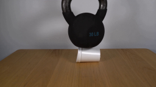
视觉工具实际返回图片 2
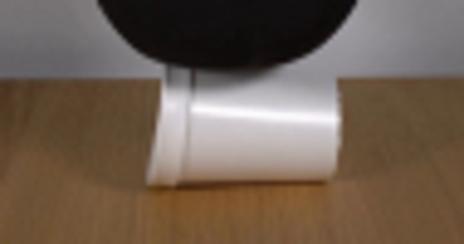
视觉工具实际返回图片 3
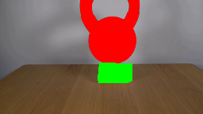
视觉工具实际返回图片 4
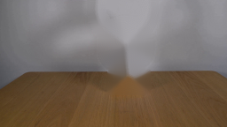
视觉工具实际返回图片 5

视觉工具实际返回图片 6

视觉工具实际返回图片 7
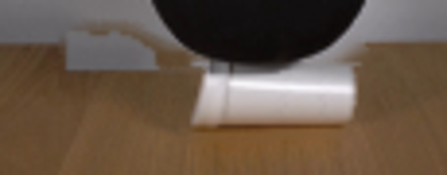
视觉工具实际返回图片 8
视觉工具实际返回图片 9
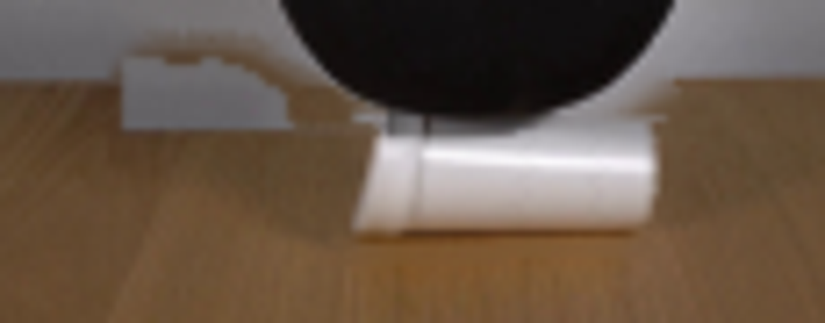
视觉工具实际返回图片 10
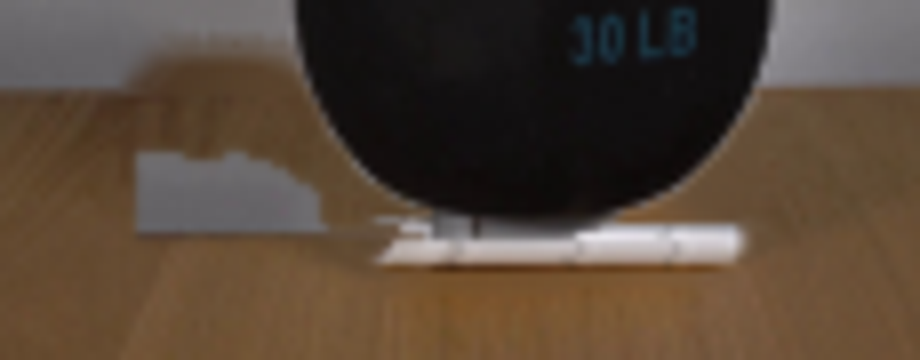
视觉工具实际返回图片 11
保存候选 5 份；完成命令 13 次；可验证图片返回 11 张。原始 API 响应与完整日志保留在本地。